A full-depth NASDAQ ITCH order book for 4 stocks in SystemVerilog. It keeps every live order of AAPL, MSFT, NVDA and TSLA in one shared UltraRAM store, meets timing at 250 MHz on the Zynq UltraScale+ K26, and replayed a full real trading day of all four on the KR260 board with every one of 4,084,599 results exact.
Why 4 stocks? On-chip memory, not logic, sets the limit. Every stock needs its own bid and ask price ladders: 28 block RAM tiles per stock. With the board's message and result memories that is 133.5 of the K26's 144 tiles (93%), while logic is only 42% used. A 5th stock would need 28 more tiles. The order store is shared and still has room (42% full at the busiest moment), so the next step is to share the ladders too: one level table in the spare UltraRAM and one ladder engine for all stocks, for 16 to 32 stocks on the same chip.
Follow one message through the whole system. Press play, or step through. The blue packet is an example Add for MSFT; the green packet is its result.
Hover over (or tap) any block for details.
Why does an Add take 24 ns but a Delete sometimes 184 ns? Pick an operation and watch the clock run. Each bar is a state of a hardware block, recorded cycle by cycle from the RTL in QuestaSim (one cycle = 4 ns at 250 MHz).
Hover over (or tap) a bar, a marker, a lane name or a comparison bar for details.
NASDAQ's ITCH feed reports every order event on the exchange: add, cancel, execute, delete and replace. A level-3 book keeps every live order, so after each message it can answer the question a trading system needs: what are the best bid and best ask, and how many shares sit there.
This design does that for 4 stocks at once. Each message carries a symbol slot (0–3). Adds bring their price and side; reduces (cancel, execute, delete) carry only an order reference, so the book looks the order up in its own store to learn its symbol, side and price. All four stocks share one 196,608-order store; each stock has its own pair of price ladders and its own top-4 levels per side.
On the board, the ARM processor replays a recorded day through the FPGA in runs of 2,048 messages and checks every result against a Python reference book. The animation at the top follows one message through the whole system.
Two-choice hashed table, 2 × 8,192 buckets × 12 ways = 196,608 orders, 72-bit entries in 52 UltraRAMs. Shared by all 4 symbols; an entry remembers its order's symbol, side, price level and shares.
8 ladders: one per symbol and side. A 3-level bitmap (16 × 64 × 64 one-cent levels) finds the next price level in a few cycles; a level table (4,096 levels) holds each level's total shares.
The best 4 levels of each side of each symbol are held in registers, so most messages update the top of book without waiting for a ladder search.
AXI-Lite registers, a 2,048-message replay RAM and a result RAM. The ARM writes a block of messages, starts a run, and reads back the top of book of each message's symbol.
The Zynq UltraScale+ processor drives the book through its M_AXI_HPM0_FPD port. A Clocking Wizard makes the 250 MHz core clock from pl_clk0 (requested 100 MHz; the processor's PLL delivers 96.97 MHz); a SmartConnect bridges to the board wrapper's AXI-Lite port.
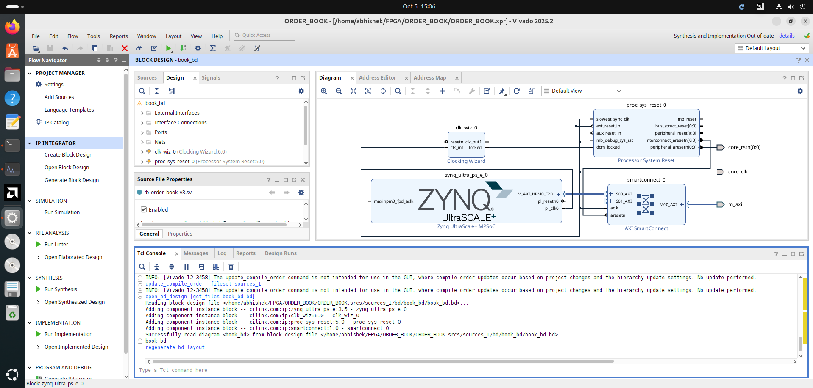
book_bd: processor, clocking, reset and interconnect. m_axil, core_clk and core_rstn leave the design to the RTL top kr260_book_top.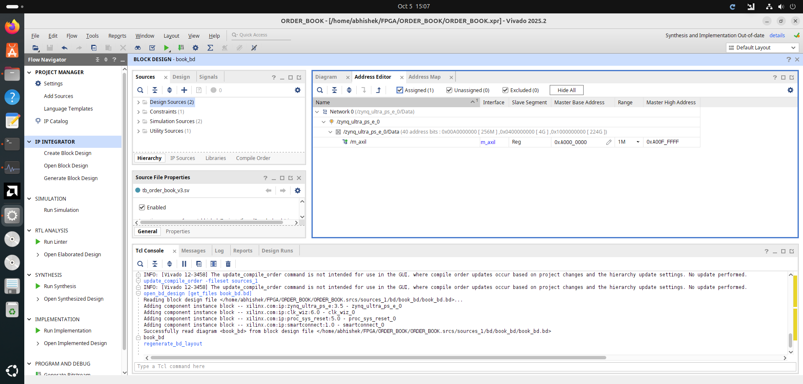
0xA000_0000 – 0xA00F_FFFF (1 MB) in the processor's address space.| Offset | Register / memory | Use |
|---|---|---|
| 0x0_0000 | CTRL | start a run, reset the book, clear counters |
| 0x0_0004 | STATUS | busy, done, initialising, book fault |
| 0x0_0008 / 0C | COUNT / CYCLES | messages in the run, clock cycles the run took |
| 0x0_0010 – 18 | LIVE / UNKNOWN / UPDATES | live orders, unknown references, top-of-book updates |
| 0x0_001C / 20 | ID / NSYM | 0x0B0B_2604; number of symbols (4) |
| 0x4_0000 | Message RAM | 2,048 messages × 32 bytes; word 7 is the symbol slot |
| 0x8_0000 | Result RAM | 2,048 × 16 bytes: best bid price, size, best ask price, size of that message's symbol |
The testbench tb_order_book_v3.sv builds the book exactly as on the board: 4 symbols on the shared 196,608-order store. It sends 23 messages that exercise every path and checks the top of book after each one. Prices are in ITCH units (1/10,000 dollar), so 1499900 is $149.99; an empty ask side reads 4294967295.
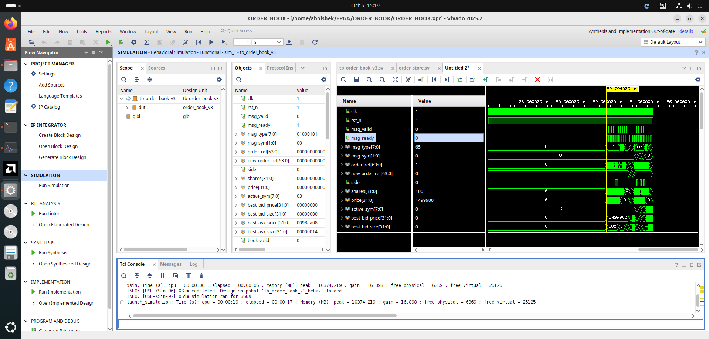
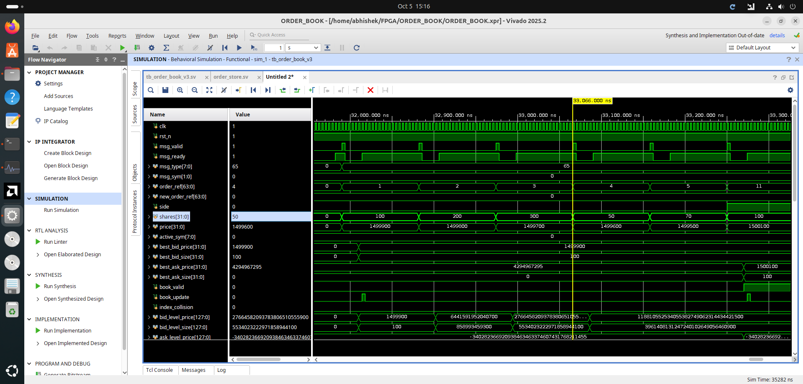
book_update pulses only when the top of book changes.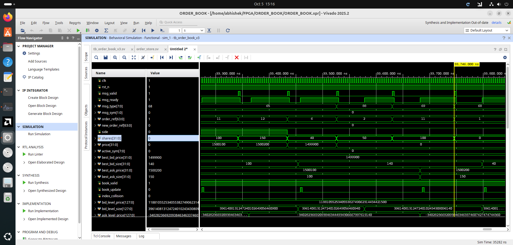
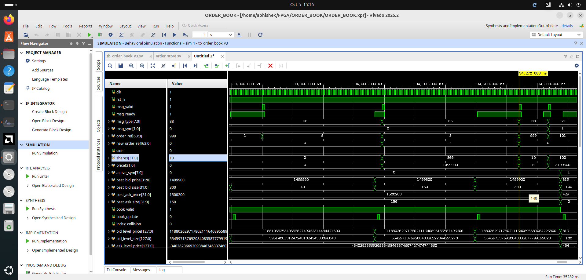
U, type 85) moves order 3 to $149.99. A cancel of unknown order 999 changes nothing and is counted.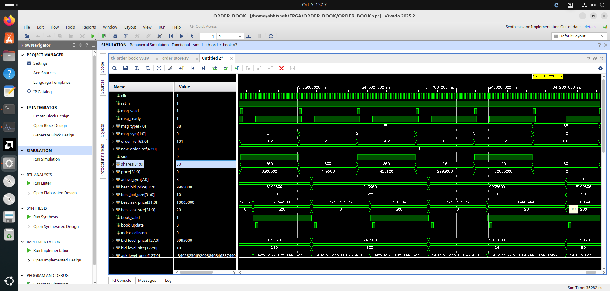
msg_sym 1, 2, 3. Each symbol gets its own bid and ask ($319.95 / $320.05, $44.99 / $45.01, $999.50 / $1000.50); active_sym follows the symbol that changed.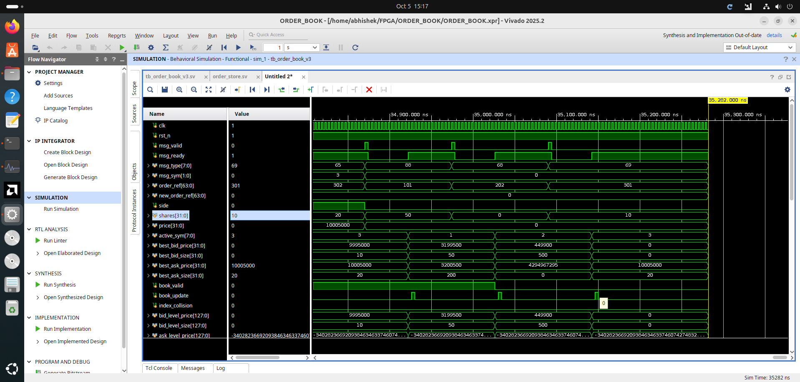
msg_sym = 0, yet each one changes the right symbol: the order store remembers every order's symbol. Symbol 2's ask side empties; symbol 3's bid side empties.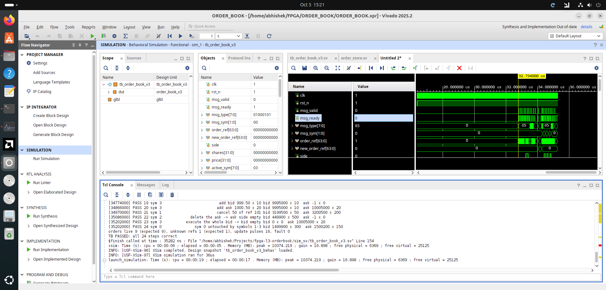
TB PASSED: all 24 steps correct, 9 orders live, 1 unknown reference, 16 top-of-book updates, no fault. The same bench also passes in QuestaSim.The waveform bench is for reading. Correctness rests on cocotb tests that compare the book with a Python reference book after every message of real NASDAQ data.
| Test | Data | Result |
|---|---|---|
Book regression (make book-test), 7 builds | 180,000 real messages, single and multi-symbol | pass, exact after every message |
| Full-day replay in simulation | 2021-07-13, 2,451,157 messages | exact |
Board wrapper through AXI (make board-test) | 4 symbols × 2,500 real messages, interleaved by time | pass, 10,000 results exact |
| Waveform bench (XSim, QuestaSim) | 23 messages, 4 symbols | 24 / 24 checks |
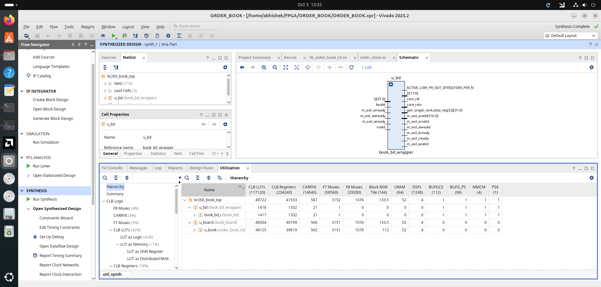
| Block | LUT | FF | BRAM | URAM | DSP |
|---|---|---|---|---|---|
| Device (K26) | 117,120 | 234,240 | 144 | 64 | 1,248 |
kr260_book_top total | 49,722 (42%) | 41,533 (18%) | 133.5 (93%) | 52 (81%) | 4 |
u_bd processor interconnect | 1,418 | 1,332 | 0 | 0 | 0 |
u_board wrapper | 48,304 | 40,199 | 133.5 | 52 | 4 |
u_book order book | 48,125 | 39,619 | 112 | 52 | 4 |
| replay and result RAM (difference) | 179 | 580 | 21.5 | 0 | 0 |
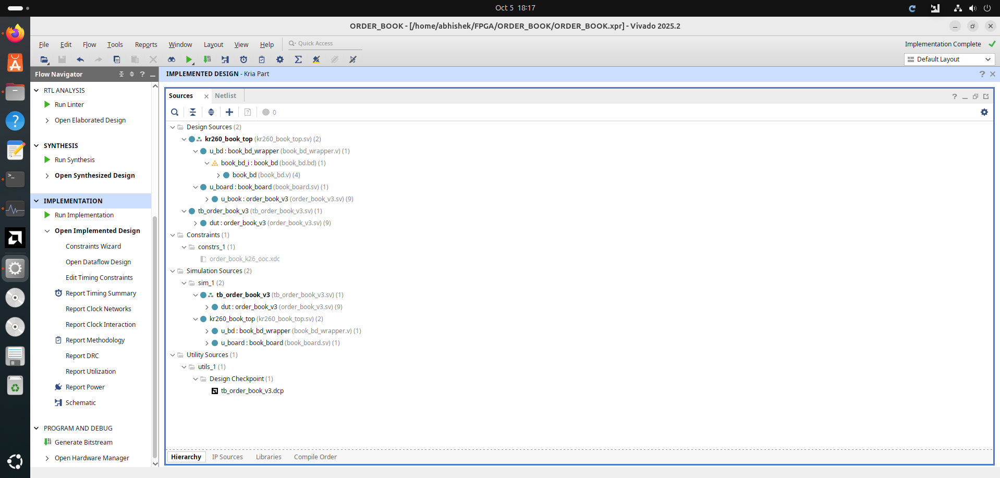
kr260_book_top holds the block design (u_bd) and the board wrapper (u_board), which holds the book (u_book). The testbench is a simulation-only top.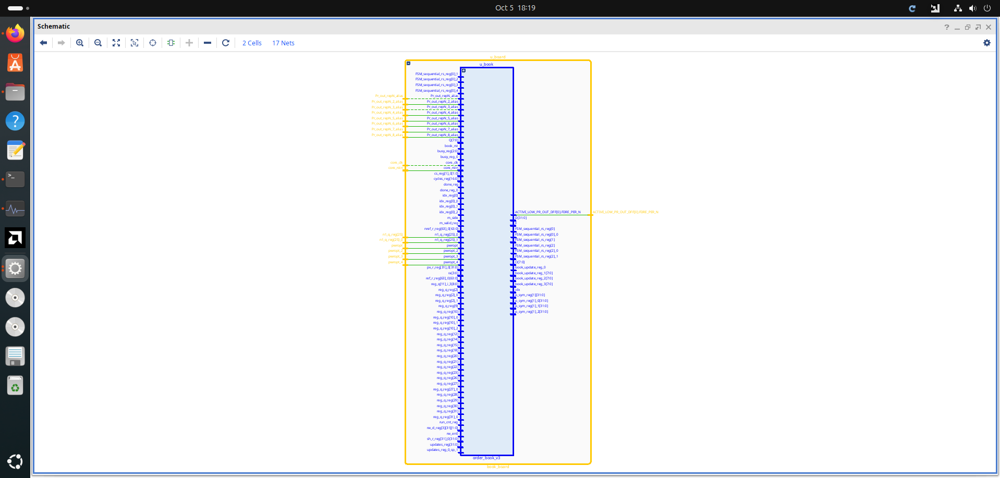
u_book (blue) inside the board wrapper u_board (yellow), with the replayer's message fields going in and the per-symbol top of book coming out.The 4-symbol board build meets timing at 250 MHz. Routing started at WNS −0.342 ns and converged to +0.002 ns; the post-route physical optimization pass kept it there. All 140,860 timing endpoints pass setup and hold.
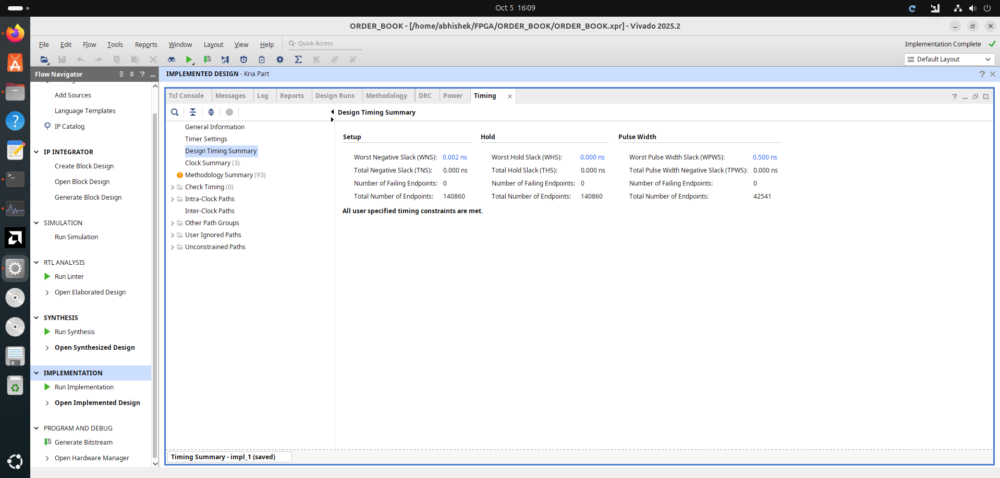
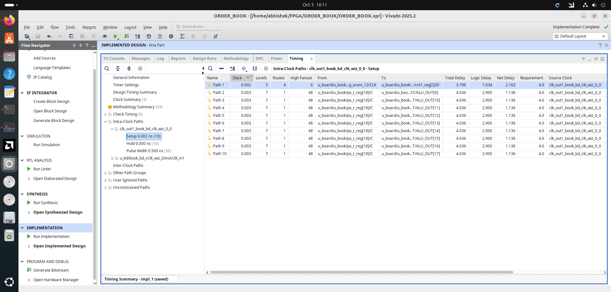
px_r_reg into a DSP block (the price ÷ 100 step) and are mostly logic delay.| Resource after placement | Used | Available | Utilization |
|---|---|---|---|
| CLB LUTs | 48,965 | 117,120 | 41.8% |
| CLB registers | 42,198 | 234,240 | 18.0% |
| Block RAM tiles | 133.5 | 144 | 92.7% |
| UltraRAM | 52 | 64 | 81.3% |
| DSP slices | 4 | 1,248 | 0.3% |
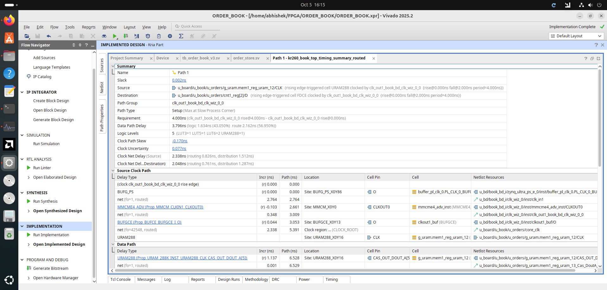
| Worst path, step by step | Incr (ns) | Where |
|---|---|---|
| URAM clock → cascade out → next URAM out | 1.137 + 0.269 | URAM288_X0Y16 → X0Y17 |
| wire, LUT3 (unpack valid bit) | 0.633 + 0.056 | SLICE_X45Y88 |
| wire out, LUT5, wire back | 0.623 + 0.057 + 0.730 | SLICE_X45Y127 |
LUT6, LUT6 (popcount of 12 valid bits) → cnt1_reg | 0.115 + 0.175 | SLICE_X47Y88 |
| Data path total (logic 1.634, routing 2.162) | 3.796 |
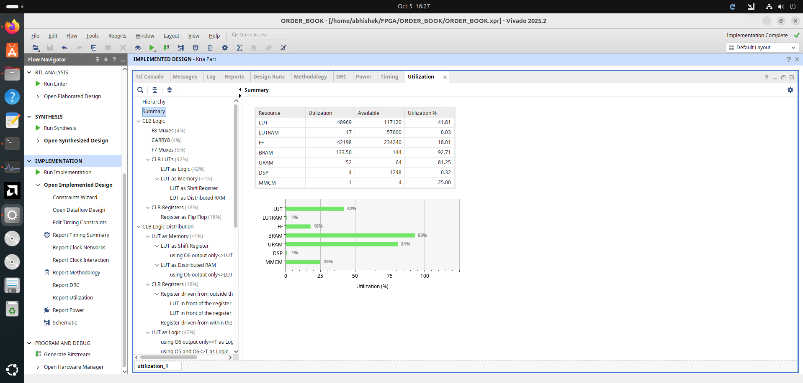
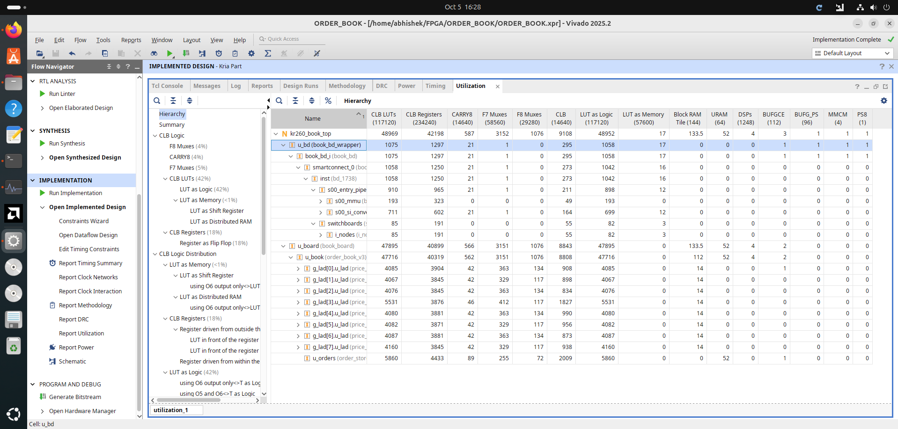
| Block (implemented) | LUT | FF | BRAM | URAM | DSP |
|---|---|---|---|---|---|
u_bd processor interconnect (SmartConnect) | 1,075 | 1,297 | 0 | 0 | 0 |
u_orders order store | 5,860 | 4,433 | 0 | 52 | 0 |
g_lad[0..7] price ladders, 8 in total | 34,168 | 30,948 | 112 | 0 | 0 |
one ladder (typical; g_lad[3] is 5,531) | ≈ 4,080 | ≈ 3,870 | 14 | 0 | 0 |
| book control: top-4 cache, state machine, ÷100 | 7,688 | 4,938 | 0 | 0 | 4 |
| board wrapper: AXI, replay and result RAM | 179 | 580 | 21.5 | 0 | 0 |
| Total | 48,969 | 42,198 | 133.5 | 52 | 4 |
The ladders are 70% of the logic and 84% of the block RAM. Each symbol costs about 8,500 LUTs and 28 BRAM tiles, so the ladders, not the shared order store, set how many symbols fit.
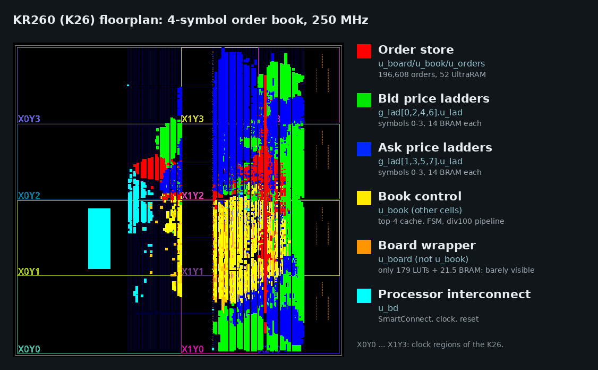
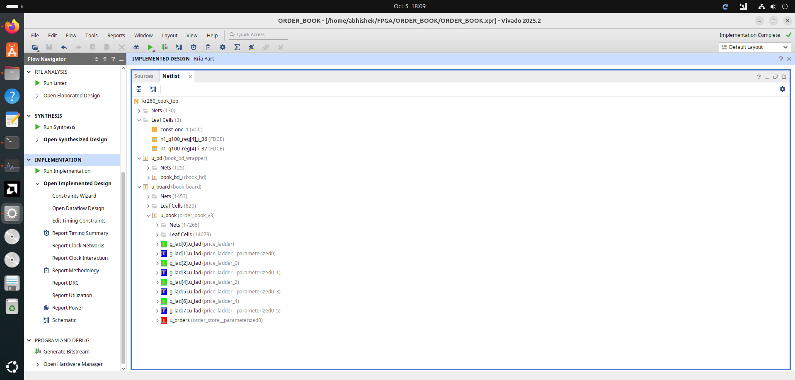
u_orders red, even ladders (bids) green, odd ladders (asks) blue.| Register name in the netlist | Meaning |
|---|---|
| div100_s1_level | price ÷ 100, stage 1: the price level |
| div100_s1_back | that level × 100, to detect sub-penny prices |
| div100_s1_offset | the level's offset in the price window |
| div100_s2_* | stage 2: final level, ladder index, out-of-window and sub-penny flags |
| const_one_* / const_zero_* | Vivado's constant 1 and 0 drivers (VCC, GND) |
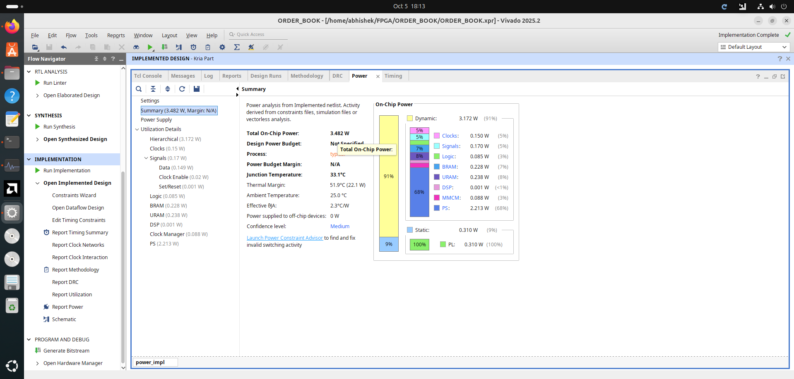
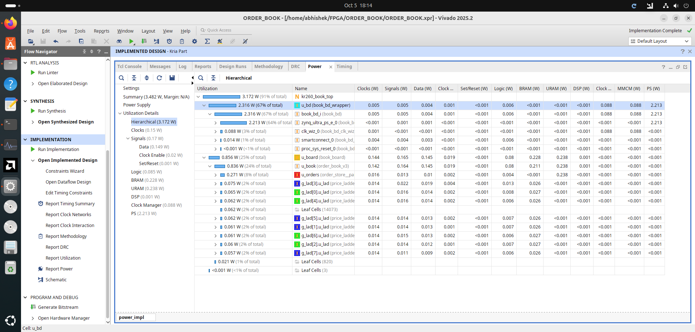
| Where the power goes (estimate) | Watts | Share |
|---|---|---|
| Processor system (ARM cores, DDR, peripherals) | 2.213 | 64% |
Order book u_book | 0.836 | 24% |
| order store (52 UltraRAMs) | 0.271 | 8% |
| 8 price ladders | 0.50 | 14% |
| Clocking (MMCM) and interconnect | 0.10 | 3% |
| Device static | 0.310 | 9% |
| Total on chip | 3.482 | 100% |
Measured on the board, the SOM drew 4.2 W during a replay (INA260 sensor; this includes DDR memory and regulators, which the on-chip estimate leaves out).
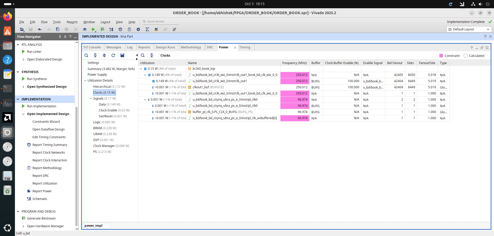
pl_clk0 at 96.974 MHz (the nearest its PLL can make to 100 MHz); the Clocking Wizard's MMCM turns it into the 250.012 MHz core clock that drives 42,405 loads.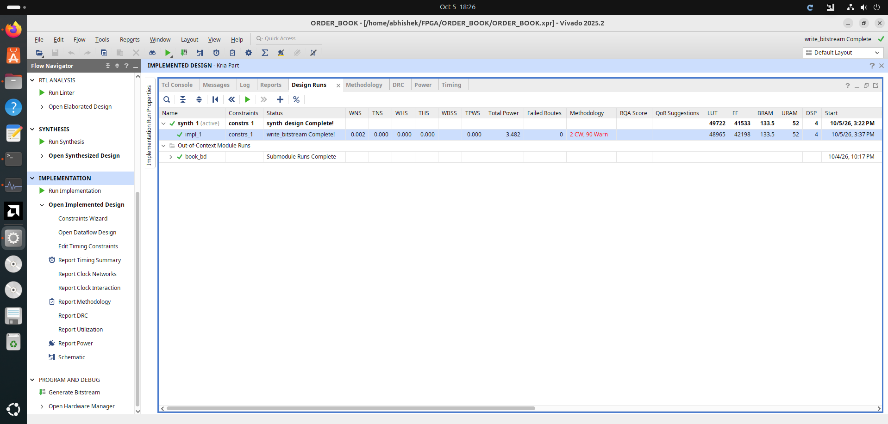
| Build | WNS at 4.0 ns | ≈ Fmax | Cycles / msg | ns / msg |
|---|---|---|---|---|
| Baseline RTL | −1.037 | 198 MHz | 18.77 | 94.5 |
| Throughput changes (background ladder jobs) | −1.592 | 179 MHz | 15.08 | 84.3 |
| Timing round 1 | −1.046 | 194 MHz | 17.15 | 86.5 |
| Timing round 2 (current) | +0.216 | met at 294 MHz | 19.32 | 69.6 at 278 MHz |
Round 2 traded a few cycles per message for a much shorter clock period: a precomputed add path, an extra register on every RAM output, and the top-of-book update moved one cycle later. Net result: 26% less time per message than the baseline. Also met: 250 MHz (+0.216 ns), 263 MHz (+0.120 ns), 278 MHz (+0.097 ns), 294 MHz (+0.055 ns).
The ARM core replays a packed day: it copies a block of messages into the FPGA, starts the run, copies the results back and compares them byte for byte with results computed by the reference book on the VM. A small web server on the board shows the run live.
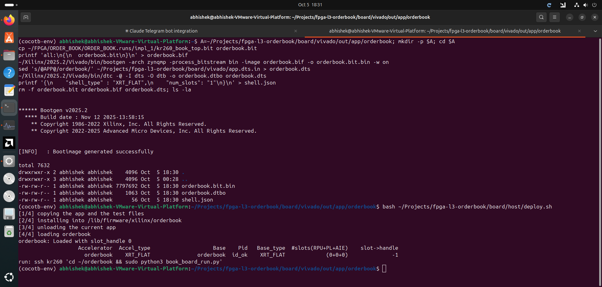
bootgen converts the bitstream, dtc builds the device-tree overlay, and xmutil loadapp programs the FPGA from Linux without a reboot.| Run, 4-symbol build (250 MHz) | Messages | Mismatches | Cycles / msg | ns / msg | Wall time |
|---|---|---|---|---|---|
| AAPL, full day 2019-10-18 | 1,669,124 | 0 | 17.38 | 69.5 | 0.87 s |
| AAPL + MSFT + NVDA + TSLA, 2019-10-18, interleaved by time | 4,084,599 | 0 | 17.3 | 69.2 | 2.26 s |
| 4-symbol day, per stock | Messages | Mismatches | Peak price levels, bid / ask |
|---|---|---|---|
| AAPL | 1,669,124 | 0 | 3,511 / 1,208 |
| MSFT | 1,442,915 | 0 | 2,259 / 1,168 |
| NVDA | 518,129 | 0 | 1,861 / 1,189 |
| TSLA | 454,431 | 0 | 1,553 / 1,715 |
The second animation at the top of the page shows where these cycles go, block by block.
Measured in simulation of the exact board configuration, on the first 200,000 messages of the real 4-stock day. One clock cycle is 4 ns at 250 MHz. Ready is when the book can accept the next message, which sets the throughput. Top of book is when the stock's new best bid or ask is out (only for messages that change it). All done includes background work: the order-store write and the ladder update.
| Operation | Count | Ready (typical / worst) | Top of book | All done (typical / worst) | What takes the time |
|---|---|---|---|---|---|
| Add (A, F) | 128,522 | 6 cyc · 24 ns / 6 | 6 cyc · 24 ns | 21 cyc · 84 ns / 21 | Brings its price: ÷100, compare with the cached top 4, update. Store insert and ladder add run in the background. |
| Cancel (X) | 345 | 13 cyc · 52 ns / 13 | 14 cyc · 56 ns | 24 cyc · 96 ns / 24 | Carries only the order number: look it up in the UltraRAM store (two buckets read, 12 ways compared), then subtract. |
| Execute (E, C) | 6,601 | 13 cyc · 52 ns / 46 · 184 ns | 14–47 cyc | 24 / 47 cyc | Lookup, subtract. If the order's level empties, the ladder searches its bitmap for the next level to refill the top 4. |
| Delete (D) | 51,545 | 13 cyc · 52 ns / 46 · 184 ns | 14–47 cyc (avg 25) | 24 / 47 cyc | Same as execute; the worst case is a delete that empties a cached level. |
| Replace (U) | 10,871 | 28 cyc · 112 ns / 48 · 192 ns | 15–48 cyc | 43 / 63 cyc · 252 ns | A delete of the old order followed by an add of the new one. |
On the board the book takes the next message as soon as it is ready, so a message can start while the previous one's background work is still running, and sometimes has to wait for it. Simulating all 4,084,599 messages of the 4-stock day this way gives 17.29 cycles per message; the board measured 17.3. The simulation matches the hardware.
| Operation, full day back to back | Count | Average | Median | Worst | Why it differs from the table above |
|---|---|---|---|---|---|
| Add (A, F) | 1,859,385 | 9.9 cyc · 40 ns | 8 | 15 · 60 ns | An Add right after another Add waits a few cycles for the previous order's store and ladder work. |
| Cancel (X) | 6,967 | 15.8 cyc · 63 ns | 13 | 19 · 76 ns | The lookup can wait for a store write still running from the previous message. |
| Delete (D) | 1,746,190 | 20.0 cyc · 80 ns | 19 | 52 · 208 ns | Same, plus the refill when a cached level empties. |
| Execute (E, C) | 153,831 | 26.9 cyc · 108 ns | 19 | 52 · 208 ns | Executions hit the best price, so they empty cached levels more often. |
| Replace (U) | 286,084 | 31.3 cyc · 125 ns | 31 | 54 · 216 ns | A delete and an add in one message. |
| All messages | 4,084,599 | 17.29 cyc · 69.2 ns | Board measurement: 17.3 cycles, 69.2 ns. |
Up to 83,109 orders were live at once across the 4 stocks, 42% of the shared store. The FPGA was busy for 0.283 s of the 2.26 s replay; the rest is the ARM copying messages in and results out over the 32-bit AXI-Lite port and comparing them. Board readings: 33.2 °C die temperature, 4.21 W SOM power.
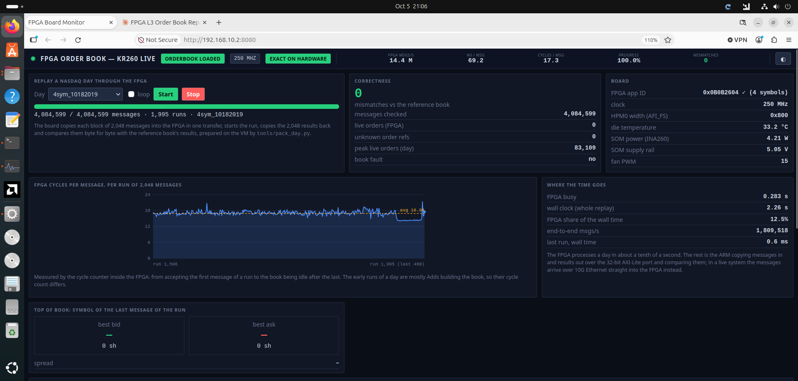
0x0B0B2604 (4 symbols), cycles per run of 2,048 messages.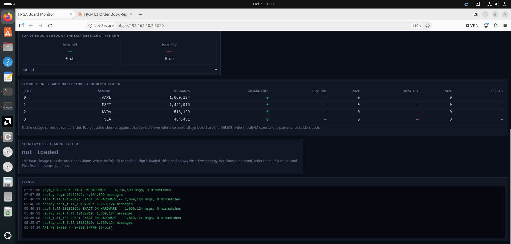
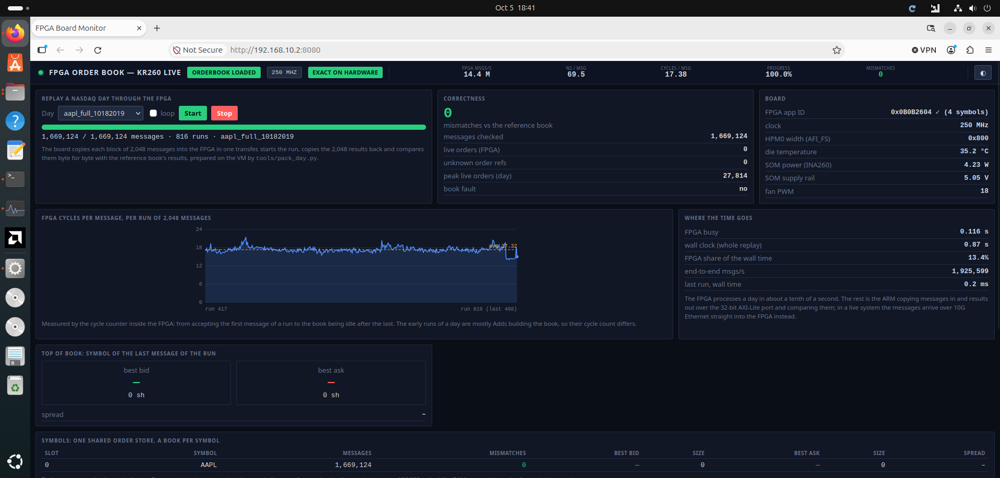
| Run (1-symbol build, 250 MHz, WNS +0.057 ns) | Messages | Mismatches | Cycles / msg | ns / msg |
|---|---|---|---|---|
| AAPL, 20,000-message slice | 20,000 | 0 | 15.67 | 62.7 |
| AAPL, full day 2019-10-18 | 1,669,124 | 0 | 17.38 | 69.5 |
Memory, not logic. Block RAM is 93% used and logic only 42%. The price ladders take 84% of the block RAM, so 4 symbols is the most this architecture fits on the K26. Moving the ladders' level tables into one shared UltraRAM table and sharing one ladder engine between symbols would allow 16 to 32 symbols.
Timing margin. The board build meets 250 MHz with 0.002 ns to spare. The worst path runs from an order-store UltraRAM through a 12-bit popcount; most of its delay is wiring. Keeping a fabric register after the UltraRAM and registering the ÷100 multiplier inside its DSP should give 0.3–0.5 ns, enough to try 263–278 MHz on the board.
End-to-end speed. The FPGA spends 13% of a replay working; the ARM's copies over AXI-Lite take the rest. Feeding messages from 10G Ethernet or DMA instead would let the board run at the FPGA's 14.4 M messages per second.